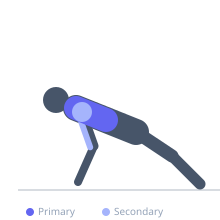

Exercise guide / Medicine Ball Push-Up Switch
Medicine Ball Push-Up Switch
A dynamic push-up variation where one hand rests on a medicine ball while the other is on the floor. After each repetition, the ball is rolled to the opposite hand, alternating which arm receives the elevated unstable position. This creates a lateral shifting load pattern that trains unilateral pressing strength, shoulder stability, and anti-rotation core control in an alternating fashion.
Primary muscles
pectoralis major sternal
pectoralis major clavicular
Secondary muscles
deltoid anterior
triceps lateral head
Stabilizers
internal oblique
external oblique
transverse abdominis
Equipment
Medicine Ball


Starting position
- Begin in a high plank with one hand on a medicine ball and the other on the floor, hands roughly shoulder-width apart in total.
Setup
- Use a firm, smooth-surfaced medicine ball that rolls easily on the floor surface. A rubberized floor or smooth tile works best for the rolling transition.
Steps
- Step 1: Begin with right hand on ball, left hand on floor. Perform one controlled push-up.
- Step 2: At the top of the push-up, shift weight to the left hand and roll the ball from the right hand to the left hand.
- Step 3: Reestablish balance with left hand on ball, right hand on floor. Perform the next push-up.
- Step 4: Roll ball back to the right and repeat. Each push-up on each side counts as one rep.
Coaching cues
- Control the ball roll — do not let it get away from you
- Keep hips square and level during the lateral transfer
Breathing
- Inhale on descent, exhale on press. Breathe normally during the ball transfer.
Range of motion
- Full push-up range on each side. The ball-side hand gets a greater stretch depth due to elevation.
Tempo
- 2-0-1-1 (2s descent, 1s press, 1s ball transfer)
Common mistakes
- Rolling the ball before fully completing the push-up
- Losing hip alignment during the lateral weight shift
- Using a ball that is too large, making the hand-to-floor height difference too great
Safety
- Ensure the ball does not roll away rapidly — keep one hand on it at all times
- On slippery floors, place ball against a wall to limit travel
Training
- hypertrophy: 8–16 reps
- endurance: 16–24 reps
- hypertrophy: 3–4 sets
- endurance: 2–3 sets
- Rest: {'hypertrophy': 75, 'endurance': 45}